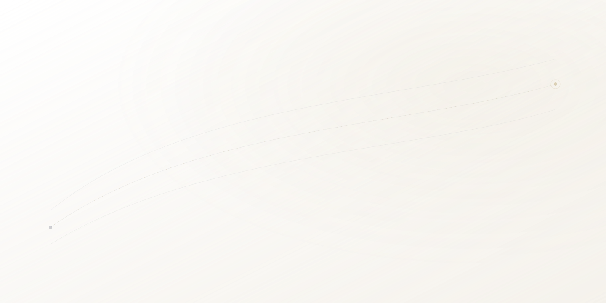

Személyvédelem · Európa és az Öböl-térség
Diszkrét személyvédelem Európa és az Öböl-térség között
Alapító által vezetett védelmi támogatás magánszemélyek, családok, magánirodák és magas bizalmi szintű környezetek számára, ahol a magánélet, a biztonságos mozgás és a folytonosság elengedhetetlen.
Kiket szolgálunk
Védelmi partner magas bizalmi szintű környezeteknek
Kevés ügyféllel dolgozunk, akiknek a magánélet, a folytonosság és a bizalom nem alku tárgya.
- Magánszemélyek és családok
- Family office-ok és magánirodák
- Diplomáciai és VIP környezetek
- UHNW magánszemélyek
- Királyi és magánirodai környezetek
- Magas profilú nemzetközi ügyfelek
Mit védünk
A védelem több, mint emberek jelenléte
Azokat a feltételeket védjük, amelyek lehetővé teszik ügyfeleink szabad életét és mozgását.
Mozgás
Biztonságos, útvonaltudatos koordináció határokon, repülőtereken, rezidenciákon és rendezvényeken át.
Magánélet
Kontrollált információ, alacsony profilú jelenlét és védelem a nem kívánt nyilvánosságtól.
Családi ritmus
Tapintatos működés, amely tiszteletben tartja a háztartás napirendjét és a család magánéletét.
Folytonosság
Stabil, szerződéshez kötött támogatás a megbízás teljes időtartama alatt.
Hírnév
A hírnévi és digitális kitettség tudatos kezelése a teljes védelmi kép részeként.
Magas bizalmi környezetek
Protokoll-érzékeny támogatás, ahol a diszkréció és a kulturális tudatosság elengedhetetlen.
Szolgáltatások
Kontrollált szolgáltatási architektúra
Minden megbízást bizalmasan határozunk meg. Az alábbi kategóriák a gondolkodásmódunkat írják le — nem operatív részleteket.
Executive Protection
Védelmi támogatás magánszemélyek, UHNW ügyfelek, magas profilú személyek és családok számára.
Személyvédelem és PSD-támogatás
Diszkrét személyes védelmi támogatás, a védett személy környezetéhez igazítva.
Biztonságos mozgás
Nemzetközi kísérési támogatás és útvonaltudatos koordináció repülőtereken, szállodákban, rendezvényeken.
Family office biztonsági támogatás
Védelmi kapcsolattartás magánirodák, magánszemélyek, családtagok és megbízható személyzet számára.
Diplomáciai és VIP védelmi koordináció
Diszkrét támogatás protokoll-érzékeny, magas bizalmi szintű környezetekben.
Védelmi hírszerzési kapcsolattartás
Fenyegetettség-tudatosság, nyílt forrású áttekintés és kockázati koordináció a tervezéshez.
Adatvédelmi és digitális kockázat
Szükség esetén megbízható szakértőkkel egyeztetünk adatvédelmi, kiber- és digitális kockázati áttekintésért.
Bizalmas ellenőrzés
Dokumentumok, referenciák és alkalmasság bizalmas áttekintése minősített megkeresés után.
A megbízások szükség esetén orvosi készenléti tervezést és koordinációt is tartalmazhatnak.
Működésünk
Elvek a jelenlét előtt
A bizalom ezen a területen csendben épül — jogszerű, elszámoltatható és ellenőrizhető magatartással.
Diszkréció
Az információ alapértelmezetten kontrollált. Csak az kerül megosztásra, ami szükséges.
Jogszerű működés
A szolgáltatások az adott joghatóság jogszabályai, engedélyezése és biztosítása keretében nyújtottak.
Hírszerzés-alapú felkészülés
A tervezés fenyegetettség-tudatosságon és nyílt forrású áttekintésen alapul, nem rögtönzésen.
Ellenőrzött személyzet
A védelmi egység minden tagja dokumentált átvilágításon esik át.
Átláthatóság az ügyfél felé
Ügyfeleink mindig tudják, ki a felelős és hogyan épül fel a megbízás.
Egyértelmű felelősségi lánc
Egyetlen elszámoltatható partner, egyértelmű irányítással.
Kulturális érzékenység
A műveletek az adott környezet kulturális és protokolláris elvárásaihoz igazodnak.
Szerződéses elkötelezettség
A folytonosság és a kötelezettségek a szerződéses időszak alatt végig meghatározottak.
Dedikált folytonossági egység
A stabil struktúra biztonsági előny
Kiválasztott megbízásoknál a G.O.A.T dedikált, ellenőrzött védelmi egységeken keresztül dolgozik, amelyeket a folytonosság, a diszkréció és az egyértelmű felelősség jellemez a szerződéses időszak alatt.
Alacsony rotáció
Kevesebb, a védett személy számára ismerősebb ember, hosszabb időn át.
Egyértelmű felelősség
Egyetlen felelősségi pont egy szétszórt állomány helyett.
Kevesebb kitett változó
A kisebb, kontrollált jelenlét csökkenti a hibapontokat és a kitettséget.
Következetes ismeretség
A folytonosság bizalmat épít és csökkenti a súrlódást a mindennapokban.
Erősebb bizalmi lánc
A kapcsolatokat építjük és ápoljuk, nem idegenek között adogatjuk.
Átláthatóság az ügyfélnek
Könnyen érthető és felügyelhető a magánszemély vagy magániroda számára.
Alapító által vezetett irányítás
Elszámoltatható vezetés
A G.O.A.T-ot alapítója, Laukó Pál vezeti, aki nemzetközi személyvédelmi és operatív biztonsági szakember, európai és közel-keleti tapasztalattal. A részletes képesítések és kiválasztott referenciák a bizalmas minősítés során érhetők el.
Bizalmas ellenőrzési folyamat
Megfontolt út a közös munkához
Első bizalmas kapcsolatfelvétel
Egy első, diszkrét beszélgetés — érzékeny részletek nélkül.
Minősítés és hatókör áttekintése
Megértjük az igény jellegét, és hogy megfelelő partner vagyunk-e.
Összeférhetetlenségi és megfelelőségi vizsgálat
Megerősítjük, hogy nincs összeférhetetlenség, és a megbízás jogszerűen teljesíthető.
Bizalmas dokumentum- és referenciaellenőrzés
Ahol indokolt, a dokumentumokat és referenciákat bizalmasan tekintjük át, szükség esetén titoktartással.
Szerződéshez kötött védelmi tervezés
A hatókört, felelősségeket és folytonosságot írásban rögzítjük.
Kérjük, ne küldjön érzékeny útiterv-, személyazonossági vagy fenyegetettségi részleteket az első üzenetben.
Földrajzi fókusz
Európa és az Öböl-térség közötti mozgásra összpontosítva
A szolgáltatások a helyileg alkalmazandó jog, engedélyezés, biztosítás és szerződéses feltételek függvényében nyújtottak.
Miért diszkrét ez a weboldal
Amit nem teszünk közzé, az szándékos
Az itteni visszafogottság jelzi, hogyan kezeljük majd az Ön magánéletét.
Nincs nyilvános ügyféllista
A nevek megnevezése elárulná azt a diszkréciót, amelyre az ügyfelek támaszkodnak.
Nincsenek csapatfotók
A személyzet azonosíthatatlan marad az ügyfelek és a csapat védelmében.
Nincsenek nyilvános tanúsítványok
A képesítéseket bizalmasan, a megfelelő emberekkel, a megfelelő időben ellenőrizzük.
Nincsenek taktikai részletek
Útvonalak, módszerek és struktúrák soha nem kerülnek nyilvánosságra.
Helyette bizalmas ellenőrzés
A minősített ügyfelek bizalmasan áttekinthetik a dokumentumokat és referenciákat.
Gyakori kérdések
Kérdések, amelyekre szívesen válaszolunk nyíltan
Miért nem tesz közzé a G.O.A.T ügyfélneveket?
Elérhetők a referenciák?
Dolgozik a G.O.A.T family office-okkal?
Nyújt a G.O.A.T általános őrzés-védelmet?
Dolgozik a G.O.A.T nemzetközileg?
Hogyan történik a személyzet ellenőrzése?
Miért nem mutatják be nyilvánosan a csapatot?
Bizalmas megkeresés
Kezdjen diszkrét beszélgetést
Csak annyit jelezzen, hogy beszélni szeretne. A folyamat többi részét bizalmasan végigvezetjük.
Bizalmas e-mail
inquiries@example.comKérjük, ne csatoljon érzékeny útiterv-, személyazonossági vagy fenyegetettségi részleteket az első üzenetben.